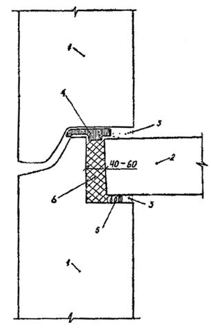
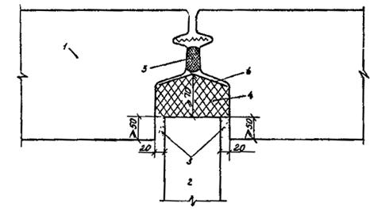
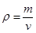

ВЕДОМСТВЕННЫЕ СТРОИТЕЛЬНЫЕ НОРМЫ
ИНСТРУКЦИЯ
ПО ТЕПЛОИЗОЛЯЦИИ СТЫКОВ НАРУЖНЫХ
СТЕНОВЫХ ПАНЕЛЕЙ МЕТОДОМ ЗАЛИВКИ ФРП-1
ВСН 220-86
ОРДЕНА ЛЕНИНА ГЛАВМОССТРОЙ ПРИ МОСГОРИСПОЛКОМЕ
ВЕДОМСТВЕННЫЕ СТРОИТЕЛЬНЫЕ НОРМЫ
ИНСТРУКЦИЯ
ПО ТЕПЛОИЗОЛЯЦИИ СТЫКОВ НАРУЖНЫХ
СТЕНОВЫХ ПАНЕЛЕЙ МЕТОДОМ ЗАЛИВКИ ФРП-1
ВСН 220-86
Ордена Ленина Главмосстрой при Мосгорисполкоме
«Ведомственные строительные нормы по теплоизоляции стыков наружных стеновых панелей методом заливки ФРП-1» разработаны институтом НИИМосстрой (к.т.н. Ф. С. Белавин, к.т.н. Е. Т. Артыкпаев, к.т.н. И. А. Румянцева, инж. Е. Ф. Файфман) совместно с ДСК-1 (инж. П. И. Немчинов) и МНИИТЭП ГлавАПУ (инж. А. Э. Янко) по результатам лабораторных и производственных исследований технологии приготовления жидкой композиции ФРП-1, заливки ее в вертикальные и горизонтальные стыки протяженностью до 3 м и с учетом опыта применения разработанной технологии при строительстве домов серии П44/17 ДСК-1. Экономический эффект от внедрения метода теплоизоляции стыков пенопластом ФРП-1 в домах серии П44/17 составляет 1,4 руб. на 1 м стыка.
Ведомственные строительные нормы содержат рекомендации по технологии заливки ФРП-1 в стыки наружных стеновых панелей жилых домов. Нормы предназначены для инженерно-технического персонала, выполняющего работы по теплоизоляции стыков фенольно-резольным пенопластом ФРП-1.
Ведомственные строительные нормы согласованы с МНИИТЭПом, ГлавАПУ, ДСК-1 Главмосстроя, отделом техники безопасности Главмосстроя, ВНИИПО и Городской санитарно-эпидемиологической станцией.
|
Ордена Ленина Главное управление по жилищному строительству ГЛАВМОССТРОЙ
|
Ведомственные строительные нормы |
ВСН 220-86 Вводятся впервые |
|
Инструкция по теплоизоляции стыков наружных стеновых панелей методом заливки ФРП-1 |
1.1. Настоящие нормы распространяются на технологию заливки жидкой композиции пенопласта ФРП-1 в построечных условиях в вертикальные и горизонтальные стыки наружных стеновых панелей жилых домов, возводимых Главмосстроем.
1.2. Теплоизоляция стыков фенольно-резольным пенопластом ФРП-1 должна осуществляться в соответствии с рабочими чертежами узлов наружных ограждающих конструкций, разработанными проектной организацией и утвержденными в установленном порядке.
Пример конструкция горизонтального и вертикального стыков панелей наружных стен жилых домов с теплоизоляцией ФРП-1 представлен на рис. 1 и 2.
Размер полости вертикальных стыков, в которых может быть применен метод заливки ФРП-1, должен быть не менее 70 мм (по ширине и глубине).
|
ВНЕСЕНА НИИМосстроем |
УТВЕРЖДЕНА
|
Срок |
1.3. Фенольно-резольный пенопласт ФРП-1 утвержден Министерством здравоохранения СССР для применения в строительстве без ограничения («Перечень полимерных материалов и конструкций, разрешенных в строительстве Министерством здравоохранения СССР» от 17 апреля 1985 г. № 3859-85, п. 2.1 и 2.16).

Рис.
1. Горизонтальный стык наружных стеновых панелей
с теплоизоляцией ФРП-1:
1 - панель наружной стены; 2 - панель перекрытия; 3 - цементно-песчаный раствор; 4 - уплотнительная прокладка из минераловатной плиты М75, оклеенная с 3-х сторон бутеролом или «Герволентом»; 5 - антисептированная пакля или синтетический жгут; 6 - ФРП-1

Рис.
2. Вертикальный стык наружных, стеновых панелей
с теплоизоляцией ФРП-1:
1 - панель наружной стены; 2 - панель внутренней стены; 3 - цементно-песчаный раствор; 4 - ФРП-1; 5 - гернит; 6 - воздухозащитная лента «Герволент»
2.1. Жидкая композиция пенопласта ФРП-1 состоит из двух компонентов: смолы резольной ФРВ-1А и продукта ВАГ-3.
2.2. Резольная смола ФРВ-1А по своим свойствам должна отвечать требованиям и нормам ТУ 6-05-1104-78 «Смола резольная ФРВ», указанным в табл. 1.
Таблица 1
|
№ п/п |
Наименование показателей |
Требования и нормы |
Методы испытаний по ТУ 6-05-1104-78 |
|
1. |
Внешний вид |
Вязкая жидкость серебристого цвета |
|
|
2. |
Индукционный период при вспенивании, не ниже |
40-240 |
|
|
3. |
Кратность вспенивания, не ниже |
21 |
|
|
4. |
Вязкость по Гепплеру при 20 °С сП в течение гарантийного срока, не более |
10000 |
2.3. Продукт ВАГ-3 по своим свойствам должен отвечать требованиям и нормам ТУ 6-05-1116-78 «Продукт ВАГ-3», указанным в табл. 2.
Таблица 2
|
№ п/п |
Наименование показателей |
Требования и нормы |
Методы испытаний по ТУ 6-05-1116-78 |
|
1. |
Внешний вид |
Гомогенная средневязкая жидкость от желтого до коричневого цвета |
|
|
2. |
Плотность при 20 °С, г/см3 |
1,39-1,43 |
|
|
3. |
Кислотное число, мг кон/г продукта |
225-255 |
2.4. Кратность вспенивания, индукционный период при вспенивании и вязкость определяют непосредственно при получении материалов от каждой партии компонентов.
3.1. Теплоизоляция стыков из пенопласта ФРП-1 по своим физико-механическим и тепловлажностным свойствам должна отвечать требованиям ТУ 6-05-221-304-74 «Фенолформальдегидный пенопласт марки ФРП-1 и изделия из него».
Основные требования, предъявляемые к пенопласту ФРП-1 в стыках, представлены в табл. 3.
Таблица 3
|
№ п/п |
Наименование показателей |
Нормы для пенопласта ФРП-1 |
|
1. |
Внешний вид |
Мелкопористый материал однородной структуры розового цвета |
|
2. |
Плотность поверхностного слоя толщиной до 1,5 см, г/см3 |
80-100 |
|
3. |
Сплошность поверхностного слоя |
Наличие несрезанного уплотненного слоя по всей открытой поверхности стыка |
3.2. Пенопласт ФРП-1 при вспенивании должен заполнять полностью объем стыка и имеющиеся в нем околы, раковины и щели.
3.3. При вспенивании ФРП-1 в стыках на его поверхности на глубине до 1,5 см от наружной поверхности образуется уплотненный поверхностный алой пенопласта плотностью от 80 до 100 кг/м3 обладающий водозащитными свойствами. По показателю горючести ФРП-1 с плотностью более 80 кг/м3 относится к трудносгораемым материалам.
Срезание поверхностного наружного слоя ФРП-1 не допускается.
3.4. При попадании смолы ФРВ-1А, катализатора ВАГ-3 или жидкой композиции ФРП-1 на внутренние бетонные поверхности необходимо эти поверхности обработать светлой эмалью или нитроэмалью, просушить и произвести шпатлевку по обработанной поверхности.
4.1. Заполнение стыков пенопластом ФРП-1 осуществляется поэтажно с панелей перекрытий.
4.2. Заполнение стыков осуществляют порционной заливкой в полость стыка жидкой композиции ФРП-1. Для этого два компонента: фенольно-резольную смолу ФРВ-1А и продукт ВАГ-3 подогревают, смешивают в соотношении 5:1 (летом), 4:1 (зимой) и заливают в стык.
4.3. Подогрев каждого компонента производят раздельно: до температуры 35-40 °С - летом, 45-50 °С - зимой, в механизированной установке (проект № 6102 СКВ Мосстрой). Соединение и перемешивание компонентов должны производиться непосредственно перед заливкой жидкой композиции в стык в пистолете-дозаторе механизированной установки. Длительность перемешивания не должна превышать 40-60 сек.
4.4. Заливка стыков осуществляется в несколько приемов. В каждый прием заливается порция композиции объемом 1,2-1,5 л. Количество таких порций, например, на вертикальный стык дома П44/17 (размером 160´140´2865 мм) и аналогичных конструкций должно составлять: летом - 3 порции, зимой 3-4; на горизонтальный стык (сечением 140´50 мм) - одна порция композиции в расчете на 1 м.
4.5. Для предотвращения вытекания жидкой композиции ФРП-1 из полости вертикального стыка и обеспечения заполнения стыка теплоизоляцией согласно проекту перезаливкой композиции на всю высоту стыка устанавливают специальную опалубку.
Опалубкой может служить также жгут из вспененного полиэтилена Вилатерм-С в обертке из 2-х - 3-х слоев высокопрочной полиэтиленовой пленки с плотным его обжатием между наружной и внутренней стеновыми панелями. Отсутствие адгезии ФРП-1 к полиэтиленовой пленке обеспечивает хорошую распалубку стыка.
Другим вариантом опалубки вертикального стыка может быть стальной уголок с приклеенным на КН-3 слоем эластичного пенополиуретана (ППУ), по наружной поверхности которого также устраивается 2-3 слоя пленки из высокопрочного полиэтилена. В этом случае опалубку прижимают к открытой поверхности стыка распорками из стальных труб.
4.6. После заливки последней порции композиции ФРП-1 сверху на вертикальный стык для ограничения высоты вспенивания пенопласта и создания на его поверхности уплотненного слоя устанавливается дополнительная опалубка. Для этих же целей предназначена и опалубка для горизонтальных стыков.
4.7. При теплоизоляции горизонтальных стыков установку опалубки производят после заливки в стык каждой порции жидкой композиции.
Опалубкой для горизонтального стыка может служить доска, например, для стыков дома П44/17 (размером 1800´150´20 мм) с приклеенным слоем эластичного ППУ и с наружными 2-3 слоями пленки из гладкого высокопрочного полиэтилена.
В период вспенивания пенопласта опалубка пригружается с усилием, ограничивающим уровень вспенивания пенопласта на высоту, не превышающую проектной.
4.8. Распалубка стыков выполняется сразу же по окончании процесса вспенивания пенопласта.
4.9. Заливку очередной порции жидкой композиции в стык производят после вспенивания предыдущей порции.
4.10. В период дождей открытые участки теплоизоляции из ФРП-1 в стыках панелей на монтируемых этажах закрывают полиэтиленовой пленкой для защиты от влажностных воздействий.
5.1. Для обеспечения удовлетворительного качества теплоизоляции стыков систематически осуществляют пооперационный входной контроль исходных компонентов. При получении компонентов ФРП-1, не удовлетворяющих требованиям ТУ 6-05-221-304-74, их возвращают изготовителю. Использование компонентов, не соответствующих ТУ 6-05-221-304-74, для теплоизоляции стыков не допускается.
5.2. Контроль качества теплоизоляции из ФРП-1 в стыках проводят по следующим показателям: степень заполнения стыка ФРП-1, внешний вид и плотность пенопласта.
5.3. Степень заполнения стыка проверяется на каждом участке стыка после его распалубки. Пенопласт должен заполнять весь объем стыка, как указано на рис. 1 и 2. В случае, если заполнение стыка неполное, следует вскрыть и ликвидировать причины некачественного заполнения стыка и этот участок теплоизолировать повторно.
5.4. Внешний вид пенопласта ФРП-1 проверяют визуально.
5.5. Плотность пенопласта ФРП-1 в горизонтальном стыке определяют по ГОСТ 17177-81 путем отбора проб с наружной поверхности теплоизоляции стыка по 3 образца сечением 5´3 см на глубине до 1,5 см с сохранением на образцах уплотненного поверхностного слоя.
Участки с выбранным пенопластом теплоизолируются вновь.
Плотность пенопласта r в кг/м3 вычисляется по формуле:

где: m - масса высушенного образца, кг;
u - объем образца, м8.
5.6. Плотность пенопласта в вертикальном стыке определяют аналогично.
При невозможности выемки образцов указанных размеров плотность ФРП-1 в вертикальном стыке определяют путем заливки пенопласта в разъемную опалубку макета стыка с сечением канала, адекватным сечению стыка, а высотой - не менее 1 м. После отверждения пенопласта с макета снимают опалубку и с наружной поверхности теплоизоляционного слоя вырезают образцы сечением 5´3 см на глубину до 1,5 см.
Контроль плотности поверхностного слоя теплоизоляции в стыках производится в каждой секции дома. Количество вертикальных и горизонтальных стыков, на которых производится проверка плотности пенопласта, не менее 3-х на одну секцию.
5.7. Сплошность поверхностного слоя обеспечивается при сохранении уплотненного слоя по всей открытой (после снятия опалубки) поверхности стыка.
Во избежание срезания пенопласта необходимо ограничить его вспенивание только в пределах заливаемой полости стыка путем обеспечения в период вспенивания плотного прилегания опалубки к стыку.
Визуальный контроль за соблюдением сплошности поверхностного слоя и полного заполнения полости стыков проводится при заливке всех стыков.
6.1. Транспортирование на базу УПТК смолы марки ФРВ-1А и катализатора ВАГ-3 осуществляют любым видом железнодорожного и автомобильного транспорта, обеспечивающим сохранность тары.
На базе смолу для хранения перекачивают в емкости с обогревом объемом 25 м3. При необходимости доставки смолы на стройку ее перекачивают во фляги емкостью 40 л и поставляют к месту применения.
6.2. Смолу резольную ФРВ-1А упаковывают в соответствующую тару:
бидоны из стали емкостью 20 л по ГОСТ 5105-66;
фляги стальные емкостью 40 л по ГОСТ 5799-69;
бочки стальные оцинкованные емкостью 200 л по ГОСТ 13950-68, по ГОСТ 17366-71 или по ГОСТ 6247-72.
Допускается упаковка и в другие тары, обеспечивающие сохранность качества продукции. Для удобства работы со смолой ФРВ-1А рекомендуется на перекрытии применять емкости не более 50 л.
6.3. Бидоны и фляги со смолой должны быть плотно закрыты крышками с прокладками из резины или других мягких уплотняющих материалов. Из бочек наиболее целесообразно использовать те, которые имеют съемные или откидывающиеся крышки с аналогичными прокладками. В случае использования бочек с закрывающимися резьбовыми пробками для смолы марки ФРВ-1А, их необходимо держать открытыми в течение 2-х суток с момента заполнения.
6.4. Из стальных бочек с резьбовыми пробками предпочтительно использовать бочки, снабженные воздушками.
6.5. Смола должна храниться в складском помещении или под навесом, защищающем ее от прямых солнечных лучей и атмосферных осадков, вдали от источников открытого огня. Тара со смолой ФРВ-1А должна при хранении иметь сообщение с атмосферой. Оптимальная температура хранения смолы от минус 5 °С до +20°С. Максимальная температура хранения +30 °С.
6.6. Тарой для продукта ВАГ-3 служат все вида тары, указанные в ГОСТ 2184-67 «Кислота серная техническая».
6.7. В качестве тары для продукта ВАГ-3 возможно использовать бидоны, фляги и бочки из полиэтилена с плотно закрывающимися крышками с прокладками из резины или других мягких материалов.
Наиболее удобной тарой для продукта ВАГ-3 являются бочки со съемными или откидывающимися крышками с прокладками из мягких материалов. В бочки предварительно закладывают полиэтиленовый пакет, в который затаривают продукт ВАГ-3. После разового использования пакет, загрязненный продуктом ВАГ-3, сжигают.
Транспортирование на базу УПТК катализатора ВАГ-3 осуществляют любым видом железнодорожного и автомобильного транспорта. В утепленном помещении базы катализатор перекачивают в емкости объемом 25 м3 и хранят в теплом складе. Для доставки ВАГ-3 на стройку его перекачивают во фляги объемом 40 л.
6.8. Продукт ВАГ-3 хранят в складских помещениях или под навесом в условиях, исключающих нагревание тары и попадание в продукт атмосферных осадков.
6.9. При хранении продукта ВАГ-3 допускается образование в нем осадка. В процессе длительного хранения при температурах ниже +10 °С допускается затвердение продукта. В этом случае продукт перед использованием разогревают до температуры +45°С или выдерживают его в течение 1-2 суток при комнатной температуре. Разогрев проводят при наличии сообщения тары с атмосферой.
7.1. При производстве работ по теплоизоляции стыков фенольно-резольным пенопластом ФРП-1 необходимо выполнять требования СНиП III-4-80 «Техника безопасности в строительстве», п. 2.4 «Указаний по пожарной безопасности для рабочих и инженерно-технических работников Главмосстроя», «Правил пожарной безопасности при производстве строительно-монтажных работ» (утвержденных ГУПО МВД СССР 26 марта 1968 г.) и требования настоящих ВСН.
7.2. При работе с компонентами пенопласта ФРП-1 смолой ФРВ-1А и катализатором ВАГ-3 должны быть предусмотрены меры, обеспечивавшие безопасные условия работы, поскольку смола и катализатор содержат в своем составе фенол, формальдегид, кислоты, а при вспенивании и отверждении выделяются газы, содержащие эти вещества.
Фенол и формальдегид вызывают сильное раздражение и обжигающее действие. При хроническом отравлении ими происходит раздражение дыхательных путей, расстройство пищеварения, возникает тошнота, общая слабость, головокружение.
Граница восприятия запаха фенола 4 мг/м3. Предел допустимых концентраций (ПДК) фенола в воздухе рабочей зоны 5 мг/м3.
Граница восприятия запаха формальдегида 2,2 мг/м3. ПДК формальдегида в рабочей зоне - 0,5 мг/м3.
Первая помощь при отравлении - увести пострадавшего с места заливки на свежий воздух.
7.3. При выполнении работ по заливке стыков рабочие должны пользоваться спецодеждой из брезента (ТУ 17-08-123-80) и резиновыми перчатками техническими типа 2 (ГОСТ 20010-74), кремом типа «Биологические перчатки», респираторами «Лепесток-200», «Астра-2».
При заливке горизонтальных стыков рабочие должны применять индивидуальные страховочные приспособления.
7.4. При заливке стыков запрещается курить и пользоваться открытым огнем.
7.5. Запрещается на рабочем места принимать пищу.
7.6. При попадании продукта ВАГ-3 на незащищенную кожу и одежду необходимо быстро промыть пораженное место водой.
7.7. При попадании фенольной смолы на кожу необходимо протереть пораженное место уайт-спиритом или перхлорэтиленом, промыть водой.
7.8. При работе с продуктом ВАГ-3 необходимо пользоваться резиновыми перчатками, а при вскрытии тары с продуктом ВАГ-3 - защитными очками, чтобы избежать попадания брызг в глаза.
7.9. Категорически запрещается открывать стальные пробки и крышки тары с продуктом ВАГ-3 и со смолой ФРВ-1А, ударяя по ним стальными предметами. Открывать пробки следует неискрящимся бронзовым ключом.
7.10. Категорически запрещается хранить тару с продуктом и из-под продукта ВАГ-3, со смолой ФРВ-1А, а также проводить погрузочно-разгрузочные работы вблизи источников открытого огня.
7.11. Категорически запрещается курить при вскрытии тары с продуктом ВАГ-3, смолой ДРВ-1А.
7.12. Во избежание накопления газов и разрыва тары при хранении необходимо обеспечить сообщение тары с атмосферой посредством открывания пробок в бочках или установить специальные заглушки, имеющие каналы, сообщающиеся с атмосферой.
7.13. Во избежание накопления водорода в полости закрытой тары над смолой необходимо, как только смола получена, приоткрывать винтовые пробки или крышки тары для сообщения полости тары с атмосферой.
7.14. Категорически запрещается разогревать металлическую тару со смолой ФРВ-1А открытым огнем.
7.15. Категорически запрещается нагревание продукта ВАГ-3 выше температуры 50 °С, так как при этом идет процесс частичного разложения продукта с выделением газов.
7.16. После окончания работ, связанных с заливкой жидкой композицией ФРП-1, рабочие должны вымыть руки и лицо.
7.17. К работе по заливке стыков фенольным пенопластом должны допускаться рабочие, проведшие инструктаж по технике безопасности и ознакомленные с настоящими ВCН.
7.18. Лаборатория ДОК должны осуществлять выборочный контроль за состоянием воздуха в рабочей зоне при вспенивании ФРП-1.
СОДЕРЖАНИЕ